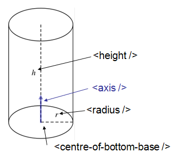
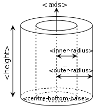
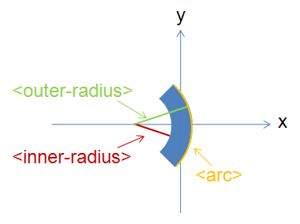
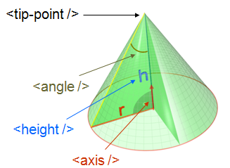
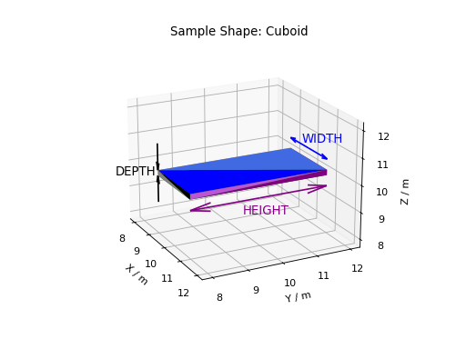
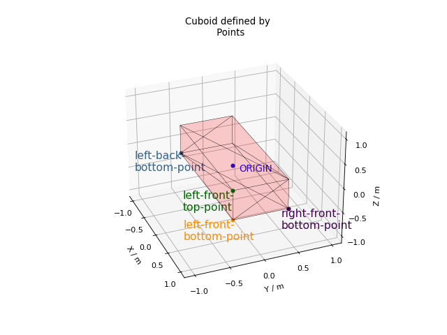
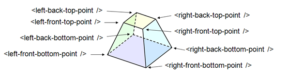

How To Define Geometric Shape#
Overview#
Primitive Shapes#
There is direct support for defining any of the following geometric shapes to add Instrument Definition File.
Combining Primitive shapes#
In addition to the shapes listed above, other shapes may be defined by combining already defined shapes into new ones. This is done using an algebra that follows the following notation:
Operator |
Description |
Example |
|---|---|---|
: |
Union (i.e two or more things making up one shape). See e.g. also 1 |
a body = legs : torso : arms : head |
“ “ |
“space” shared between shapes, i,e. intersection (the common region of shapes). See e.g. also 2 |
“small-circle = big-circle small-circle” (where the small circle placed within the big-circle) |
# |
Complement |
# sphere = shape defined by all points outside sphere |
( ) |
Brackets are used to emphasise which shapes an operation should be applied to. |
box1 (# box2) is the intersection between box1 and the shape defined by all points not inside box2 |
Axes and units of measure#
All objects are defined with respect to cartesian axes (x,y,z), and the default unit of all supplied values are metres(m). Objects may be defined so that the origin (0,0,0) is at the centre, so that when rotations are applied they do not also apply an unexpected translation.
Within instrument definitions we support the concept of defining a rotation by specifying what point the object is facing. To apply that correctly the side of the object we consider to be the front is the xy plane. Hence, when planning to use facing the shape should be defined such that the positive y-axis is considered to be up, the x-axis the width, and the z-axis the depth of the shape.
To be aware of#
When defining a shape you have complete freedom to define it with respect to whatever coordinate system you like. However, we have a least the following recommendation
The origin of coordinate system of a shape is used for calculating the L2 distances. Therefore, at least for any TOF instruments where you care about L2 distances, the origin should be chosen to be at the position on your detector shape that is best used for calculation the L2 distance
Examples#
Defining a sphere#
<sphere id="some-sphere">
<centre x="0.0" y="0.0" z="0.0" />
<radius val="0.5" />
</sphere>
<algebra val="some-sphere" />
Any shape must be given an ID name. Here the sphere has been given the name “some-sphere”. The purpose of the ID name is to use it in the description, here this is done with the line . The description is optional. If it is left out the algebraic intersection is taken between any shapes defined.
Defining a ball with a hole through it along the x-axis#
<cylinder id="stick">
<centre-of-bottom-base x="-0.5" y="0.0" z="0.0" />
<axis x="1.0" y="0.0" z="0.0" />
<radius val="0.05" />
<height val="1.0" />
</cylinder>
<sphere id="some-sphere">
<centre x="0.0" y="0.0" z="0.0" />
<radius val="0.5" />
</sphere>
<algebra val="some-sphere (# stick)" />
This algebra string reads as follows: take the intersection between a sphere and the shape defined by all points not inside a cylinder of length 1.0 along the x-axis. Note the brackets around # stick in the algebraic string are optional, but here included to emphasis that the “space” between the “some-sphere” and “(# stick)” is the intersection operator.
Notation used to defined any of the predefined geometric shapes#
Sphere#
<sphere id="A">
<centre x="4.1" y="2.1" z="8.1" />
<radius val="3.2" />
</sphere>
Cylinder#
<cylinder id="A">
<centre-of-bottom-base r="0.0" t="0.0" p="0.0" /> <!-- here position specified using spherical coordinates -->
<axis x="0.0" y="0.2" z="0" />
<radius val="1" />
<height val="10.2" />
</cylinder>

Schematic of a cylinder#
Hollow Cylinder#
<hollow-cylinder id="A">
<centre-of-bottom-base r="0.0" t="0.0" p="0.0" /> <!-- here position specified using spherical coordinates -->
<axis x="0.0" y="1.0" z="0" />
<inner-radius val="0.007" />
<outer-radius val="0.01" />
<height val="0.05" />
</hollow-cylinder>

Schematic of a hollow cylinder#
Infinite Cylinder#
<infinite-cylinder id="A" >
<centre x="0.0" y="0.2" z="0" />
<axis x="0.0" y="0.2" z="0" />
<radius val="1" />
</infinite-cylinder>
Slice of Cylinder Ring#
<slice-of-cylinder-ring id="A">
<inner-radius val="0.0596"/>
<outer-radius val="0.0646"/>
<depth val="0.01"/>
<arc val="45.0"/>
</slice-of-cylinder-ring>
This XML element defines a slice of a cylinder ring. Most importantly the part of this shape facing the sample is flat and looks like this:

XMLsliceCylinderRingDescription.png#
Cone#
<cone id="A" >
<tip-point x="0.0" y="0.2" z="0" />
<axis x="0.0" y="0.2" z="0" />
<angle val="30.1" />
<height val="10.2" />
</cone>

XMLconeDescription.png#
Infinite Cone#
<infinite-cone id="A" >
<tip-point x="0.0" y="0.2" z="0" />
<axis x="0.0" y="0.2" z="0" />
<angle val="30.1" />
</infinite-cone>
Infinite Plane#
Is the 3D shape of all points on the plane and all points on one side of the infinite plane, the side which point away from the infinite plane in the direction of the normal vector.
<infinite-plane id="A">
<point-in-plane x="0.0" y="0.2" z="0" />
<normal-to-plane x="0.0" y="0.2" z="0" />
</infinite-plane>
Cuboid#
Here the dimensions are used to define a 2m x 4m x 0.2m cuboid with its centre at (10,10,10).
<cuboid id="some-cuboid">
<width val="2.0" />
<height val="4.0" />
<depth val="0.2" />
<centre x="10.0" y="10.0" z="10.0" />
</cuboid>
<algebra val="some-cuboid" />
(Source code, png, hires.png, pdf)
{kind=link}
{kind=link}

In the next example, four points are used to describe a 2m x 0.8m x 0.4m cuboid with the its centre at the origin.
<cuboid id="shape">
<left-front-bottom-point x="1" y="-0.4" z="-0.3" />
<left-front-top-point x="1" y="-0.4" z="0.3" />
<left-back-bottom-point x="-1" y="-0.4" z="-0.3" />
<right-front-bottom-point x="1" y="0.4" z="-0.3" />
</cuboid>
<algebra val="shape" />
(Source code, png, hires.png, pdf)
{kind=link}
{kind=link}

Hexahedron#
<hexahedron id="Bertie">
<left-back-bottom-point x="0.0" y="0.0" z="0.0" />
<left-front-bottom-point x="1.0" y="0.0" z="0.0" />
<right-front-bottom-point x="1.0" y="1.0" z="0.0" />
<right-back-bottom-point x="0.0" y="1.0" z="0.0" />
<left-back-top-point x="0.0" y="0.0" z="2.0" />
<left-front-top-point x="0.5" y="0.0" z="2.0" />
<right-front-top-point x="0.5" y="0.5" z="2.0" />
<right-back-top-point x="0.0" y="0.5" z="2.0" />
</hexahedron>

XMLhexahedronDescription.png#
Tapered Guide#
Available from version 3.0 onwards.
A tapered guide is a special case of hexahedron; a “start” rectangular aperture which in a continued fashion changes into an “end” rectangular aperture.
<tapered-guide id="A Guide">
<aperture-start height="2.0" width="2.0" />
<length val="3.0" />
<aperture-end height="4.0" width="4.0" />
<centre x="0.0" y="5.0" z="10.0" /> <!-- Optional. Defaults to (0, 0 ,0) -->
<axis x="0.5" y="1.0" z="0.0" /> <!-- Optional. Defaults to (0, 0 ,1) -->
</tapered-guide>
The centre value denotes the centre of the start aperture. The specified axis runs from the start aperture to the end aperture. “Height” is along the y-axis and “width” runs along the x-axis, before the application of the “axis” rotation.
Rotating Shapes#
Note that some shapes (such as Cylinder (finite height) and Tapered Guide ) can be oriented in a
certain direction, using the axis tag, but this representation isn’t general enough to support
all possible 3D rotations for all shapes.
Most shapes can be rotated individually or as part of an ensemble, by using the
rotate or rotate-all tags respectively.
The shapes that can be rotated are: Sphere, Cylinder (finite height),
Hollow Cylinder (finite height), Infinite Cylinder,
Slice of Cylinder Ring, Infinite Plane, Cuboid, Hexahedron and Tapered Guide.
Use the rotate tag to rotate a shape individually around its centre (or centre-of-bottom-base).
The shape is rotated by an angle in degrees around the x,y and z axes in that order. To rotate a
cuboid 90° clockwise around x and 45° anti-clockwise around y:
<cuboid id="stick">
<width val="3.0" />
<height val="0.5" />
<depth val="0.5" />
<centre x="0.0" y="0.0" z="0.0" />
<rotate x="90" y="-45" z="0" />
</cuboid>
<algebra val="stick" />
Use the rotate-all tag to rotate a combined shape about the origin. To rotate the unison of a
sphere on the end of a cylinder (by 90° clockwise around x and 45° anti-clockwise around y):
<cylinder id="stick">
<centre-of-bottom-base x="-1.0" y="0.0" z="0.0" />
<axis x="1.0" y="0.0" z="0.0" />
<radius val="0.2" />
<height val="2.0" />
</cylinder>
<sphere id="some-sphere">
<centre x="2.0" y="0.0" z="0.0" />
<radius val="0.5" />
</sphere>
<algebra val="some-sphere (: stick)" />
<rotate-all x="90" y="-45" z="0" />
All these rotatable shapes (expect for Infinite Plane and Infinite Cylinder) can be plotted to check your shape definition is correct. For more details see 3D Mesh Plots for Sample Shapes.
Shapes will be automatically rotated, if a rotation is set using SetGoniometer v1.
This goniometer rotation is about the origin and can work alongside manual rotation tags.
Note the rotations are applied in the order rotate, rotate-all, goniometer.
Bounding-Box#
When a geometric shape is rendered in the instrument viewer, Mantid will attempt to automatically construct an axis-aligned bounding box for every geometric shape that does not have one yet. Well-defined bounding boxes are required by many features of Mantid, from correctly rendering the instrument to performing calculations in various algorithms.
The automatically calculated bounding boxes can generally be relied upon and are usually ideal. However, if the automatic calculation fails to produce a reasonable bounding box, or if performance becomes an issue with particularly complex shapes, you have the option of adding a manually pre-calculated bounding box.
A typical symptom of the automatic calculation creating an incorrect bounding box is your instrument appearing very small when viewed (forcing you to zoom in for a long time to see it). In such cases, the axis visualizations also tend to not display properly.
A custom bounding-box can be added to shapes using the following notation:
<hexahedron id="shape">
<left-front-bottom-point x="0.0" y="-0.037" z="-0.0031" />
<right-front-bottom-point x="0.0" y="-0.037" z="0.0031" />
<left-front-top-point x="0.0" y="0.037" z="-0.0104" />
<right-front-top-point x="0.0" y="0.037" z="0.0104" />
<left-back-bottom-point x="0.005" y="-0.037" z="-0.0031" />
<right-back-bottom-point x="0.005" y="-0.037" z="0.0031" />
<left-back-top-point x="0.005" y="0.037" z="-0.0104" />
<right-back-top-point x="0.005" y="0.037" z="0.0104" />
</hexahedron>
<algebra val="shape" />
<bounding-box>
<x-min val="0.0"/>
<x-max val="0.005"/>
<y-min val="-0.037"/>
<y-max val="0.037"/>
<z-min val="-0.0104"/>
<z-max val="0.0104"/>
</bounding-box>
Note for the best effect this bounding box should be enclosing the shape as tight as possible.
Category: Concepts